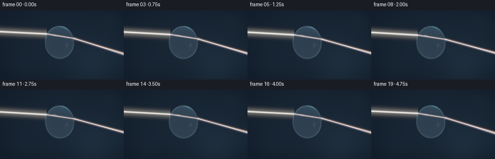
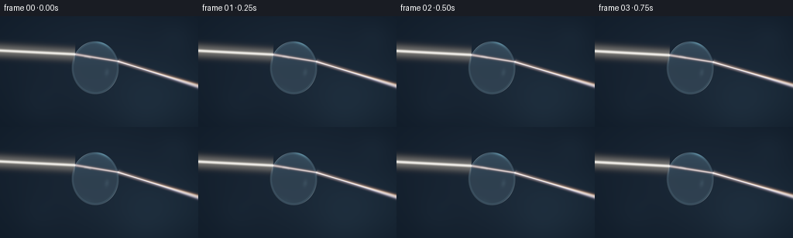

CODING AGENTS AS PIXEL WORLD MODELS
traex/GPT-6.1-Sol · phygen_088
点击播放 · 原生 RGB 像素
逐轮保存的候选
回放视频、检查图与代码变化。
每份候选均可单独播放。实际图片检查记录在下方工具轨迹中。
候选 01播放与检查图
点击播放 · 原生 RGB 像素


展开代码变化
--- 上一保存版本
+++ 本次保存版本
@@ -0,0 +1,161 @@
+"""Procedural water optics: analytic surfaces, Snell refraction, and radiance compositing."""
+from pathlib import Path
+import numpy as np
+from PIL import Image
+from artifact_io import save
+
+ROOT = Path(__file__).resolve().parent
+W, H, S = 256, 144, 3
+Y, X = np.mgrid[0:H*S, 0:W*S].astype(np.float32)
+X=(X+.5)/S; Y=(Y+.5)/S
+rng=np.random.default_rng(88)
+
+def unit(v):
+ return v/np.maximum(np.linalg.norm(v,axis=-1,keepdims=True),1e-8)
+
+def environment(d):
+ # Large photographic softboxes in an otherwise nearly dark room.
+ base=np.zeros(d.shape,dtype=np.float32)
+ base += np.array([.028,.049,.075],np.float32)
+ base += np.maximum(d[...,1:2],0)*np.array([.010,.026,.040])
+ key=unit(np.array([-.57,-.65,.51]))
+ tangent=unit(np.cross(key,np.array([0.,1.,0.])))
+ vertical=np.cross(tangent,key)
+ along=d@tangent; across=d@vertical; facing=d@key
+ strip=np.exp(-((along/.33)**8+(across/.075)**4))*np.maximum(facing,0)**5
+ base+=strip[...,None]*np.array([4.8,5.1,5.4])
+ key2=unit(np.array([.84,.26,.46]))
+ soft=np.exp((d@key2-1)*48)
+ base+=soft[...,None]*np.array([.55,.97,1.28])
+ key3=unit(np.array([-.36,.84,-.37]))
+ base+=np.exp((d@key3-1)*24)[...,None]*np.array([.04,.11,.15])
+ return base
+
+def drop_surface(cx,cy,a,b):
+ ux=(X-cx)/a; uy=(Y-cy)/b
+ rho=ux*ux+uy*uy
+ inside=rho<1
+ zz=np.sqrt(np.maximum(1-rho,0))*a
+ pos=np.stack([X-cx,Y-cy,zz],-1)
+ normal=unit(pos/np.array([a*a,b*b,a*a]))
+ cosi=normal[...,2]
+ eta=1/1.335
+ d=np.zeros_like(pos); d[...,2]=-1
+ trans=eta*d+(eta*cosi-np.sqrt(np.maximum(1-eta*eta*(1-cosi*cosi),0)))[...,None]*normal
+ ell=np.array([a*a,b*b,a*a])
+ t=-2*np.sum(pos*trans/ell,-1)/np.maximum(np.sum(trans*trans/ell,-1),1e-9)
+ exitpos=pos+t[...,None]*trans
+ nex=-unit(exitpos/ell)
+ c=-np.sum(nex*trans,-1)
+ k=1-1.335**2*(1-c*c)
+ out=1.335*trans+(1.335*c-np.sqrt(np.maximum(k,0)))[...,None]*nex
+ refl=d+2*cosi[...,None]*normal
+ fres=.0206+.9794*(1-cosi)**5
+ # Transmission keeps the sphere clear, with background bend and a cool water tint.
+ transmitted=environment(out)
+ transmission=.91*np.exp(-np.maximum(t,0)[...,None]*np.array([.0018,.0008,.0004]))
+ rgb=transmitted*transmission*(1-fres[...,None])+environment(refl)*fres[...,None]
+ rgb+=np.exp(-((np.sqrt(rho)-.94)/.023)**2)[...,None]*np.array([.013,.026,.034])
+ # Very fine lower meniscus glints, never an opaque cartoon outline.
+ theta=np.arctan2(uy,ux)
+ edge=np.exp(-((np.sqrt(rho)-.992)/.011)**2)
+ gleam=.024+.19*np.exp(-((theta-.69)/.45)**2)+.24*np.exp(-((theta+2.2)/.35)**2)
+ rgb+=edge[...,None]*gleam[...,None]*np.array([.63,.86,1.0])
+ mask=np.clip((1-rho)*min(a,b)*S/2,0,1)
+ return rgb,mask
+
+def snell(direction,normal,nratio):
+ co=-np.dot(direction,normal)
+ k=1-nratio*nratio*(1-co*co)
+ if k<0: return None
+ return unit(nratio*direction+(nratio*co-np.sqrt(k))*normal)
+
+def ray_path(y0,d,cx,cy,a,b,n):
+ origin=np.array([-10.,y0]); center=np.array([cx,cy]); inv=np.array([a**-2,b**-2])
+ q=origin-center
+ aa=np.sum(d*d*inv); bb=2*np.sum(q*d*inv); cc=np.sum(q*q*inv)-1
+ disc=bb*bb-4*aa*cc
+ if disc<0: return None
+ entry=origin+((-bb-np.sqrt(disc))/(2*aa))*d
+ normal=unit((entry-center)*inv)
+ middle=snell(d,normal,1/n)
+ q=entry-center
+ t=-2*np.sum(q*middle*inv)/np.sum(middle*middle*inv)
+ leave=entry+middle*t
+ outgoing=snell(middle,-unit((leave-center)*inv),n)
+ if outgoing is None: return None
+ return origin,entry,leave,leave+outgoing*220
+
+def line_light(canvas,p,q,color,width,energy,halo=0):
+ vx,vy=q-p; length=np.hypot(vx,vy)
+ tx=(X-p[0])*vx/length+(Y-p[1])*vy/length
+ dist=((X-p[0])*vy-(Y-p[1])*vx)/length
+ end=np.clip(tx*S+.5,0,1)*np.clip((length-tx)*S+.5,0,1)
+ profile=np.exp(-.5*(dist/width)**2)
+ if halo: profile+=halo*np.exp(-.5*(dist/(width*4.8))**2)
+ canvas+= (profile*end*energy)[...,None]*color
+
+# A sparse scattering medium makes a real beam visible without clutter.
+particles=np.column_stack([rng.uniform(2,253,32),rng.uniform(8,134,32),rng.uniform(.06,.24,32)])
+frames=[]
+for frame in range(20):
+ time=frame/4
+ cx=123+.45*np.sin(time*.65)
+ cy=67+.35*np.sin(time*.85)
+ a,b=30.5,34.5
+ vignette=np.exp(-((X-132)/172)**2-((Y-66)/109)**2)
+ canvas=np.zeros((H*S,W*S,3),dtype=np.float32)
+ canvas+=np.array([.003,.007,.014])
+ canvas+=vignette[...,None]*np.array([.005,.009,.015])
+ canvas+=np.exp(-((X-208)/73)**2-((Y-105)/48)**2)[...,None]*np.array([.003,.007,.011])
+ # Restrained, out-of-focus background highlights.
+ for px,py,rad,power in [(227,28,15,.004),(49,114,18,.003),(186,128,24,.004)]:
+ canvas+=np.exp(-((X-px)**2+(Y-py)**2)/(2*rad*rad))[...,None]*np.array([.30,.62,1])*power
+ drop,mask=drop_surface(cx,cy,a,b)
+ canvas=canvas*(1-mask[...,None])+drop*mask[...,None]
+ # Slowly changing incidence makes the refraction visibly continuous.
+ incidence=.050+.010*np.sin(time*.7)
+ d=unit(np.array([1.,incidence]))
+ y0=44.5+1.15*np.sin(time*.8-.35)
+ intensity=.91+.07*np.sin(time*1.3)
+ central=ray_path(y0,d,cx,cy,a,b,1.335)
+ start,entry,leave,end=central
+ white=np.array([1.0,.94,.82])
+ line_light(canvas,start,entry,white,1.0,1.30*intensity,.12)
+ line_light(canvas,start,entry,np.array([1,.99,.94]),.25,.70*intensity,.0)
+ # Bundled spectral rays refract independently through the curved water boundary.
+ spectra=[(1.331,np.array([1.,.07,.014])),(1.333,np.array([1.,.38,.035])),
+ (1.335,np.array([.66,1.,.11])),(1.338,np.array([.015,.67,1.])),
+ (1.342,np.array([.24,.12,1.]))]
+ for n,color in spectra:
+ for off in np.linspace(-1.8,1.8,19):
+ path=ray_path(y0+off,d,cx,cy,a,b,n)
+ if path is None: continue
+ _,p,q,z=path
+ weight=np.exp(-.5*(off/.77)**2)
+ line_light(canvas,p,q,color,.24,.073*weight*intensity,.085)
+ line_light(canvas,q,z,color,.30,.107*weight*intensity,.11)
+ # Micro-caustics where light crosses the air/water interfaces.
+ for p,power,rad in [(entry,.65,.65),(leave,.95,.62)]:
+ spot=np.exp(-((X-p[0])**2+(Y-p[1])**2)/(2*rad**2))
+ canvas+=spot[...,None]*np.array([.82,.94,1])*power*intensity
+ canvas+=np.exp(-((X-p[0])**2+(Y-p[1])**2)/(2*2.7**2))[...,None]*np.array([.25,.48,.75])*.04
+ # Faint moving light fluctuations in the haze, not discrete projectile-like rays.
+ prog=((time*.28)%1)
+ wave=np.exp(-((X-(prog*105-5))/6.0)**2)
+ dist=Y-(y0+(X+10)*incidence)
+ gate=(X<entry[0]-1)
+ canvas+=(wave*np.exp(-dist**2/4)*gate)[...,None]*white*.042
+ for px,py,size in particles:
+ xx=px+.7*np.sin(time*.4+px); yy=py-time*.12
+ beamdist=abs(yy-(y0+(xx+10)*incidence))
+ illumination=.002+.035*np.exp(-beamdist**2/18)*(xx<entry[0])
+ canvas+=np.exp(-((X-xx)**2+(Y-yy)**2)/(2*size*size))[...,None]*np.array([.64,.80,1])*illumination
+ # Photographic highlight rolloff and sRGB encoding.
+ mapped=1-np.exp(-canvas*1.24)
+ srgb=np.where(mapped<=.0031308,12.92*mapped,1.055*np.maximum(mapped,0)**(1/2.4)-.055)
+ im=Image.fromarray(np.uint8(np.clip(srgb*255,0,255)))
+ im=im.resize((W,H),Image.Resampling.LANCZOS)
+ frames.append(np.asarray(im))
+save(np.stack(frames).astype(np.uint8),ROOT)
+print('Saved 20 RGB frames, 256x144 at 4 fps.')
可观测工具轨迹
实际执行的命令与返回图片。
命令 1exit 0
/bin/bash -lc "ls -la && cat prompt.txt && printf '\\n---RULES---\\n' && cat GENERATION_RULES.md && printf '\\n---SPEC---\\n' && cat task_spec.json"
命令 2exit 0
/bin/bash -lc "cat artifact_io.py && python - <<'PY'
import numpy, PIL
print('numpy',numpy.__version__)
PY"命令 3exit 1
/bin/bash -lc "cat > generate.py <<'PY'
\"\"\"Procedural water optics: analytic surfaces, Snell refraction, and radiance compositing.\"\"\"
from pathlib import Path
import numpy as np
from PIL import Image
from artifact_io import save
ROOT = Path(__file__).resolve().parent
W, H, S = 256, 144, 3
Y, X = np.mgrid[0:H*S, 0:W*S].astype(np.float32)
X=(X+.5)/S; Y=(Y+.5)/S
rng=np.random.default_rng(088)
def unit(v):
return v/np.maximum(np.linalg.norm(v,axis=-1,keepdims=True),1e-8)
def environment(d):
# Large photographic softboxes in an otherwise nearly dark room.
base=np.zeros(d.shape,dtype=np.float32)
base += np.array([.028,.049,.075],np.float32)
base += np.maximum(d[...,1:2],0)*np.array([.010,.026,.040])
key=unit(np.array([-.57,-.65,.51]))
tangent=unit(np.cross(key,np.array([0.,1.,0.])))
vertical=np.cross(tangent,key)
along=d@tangent; across=d@vertical; facing=d@key
strip=np.exp(-((along/.33)**8+(across/.075)**4))*np.maximum(facing,0)**5
base+=strip[...,None]*np.array([4.8,5.1,5.4])
key2=unit(np.array([.84,.26,.46]))
soft=np.exp((d@key2-1)*48)
base+=soft[...,None]*np.array([.55,.97,1.28])
key3=unit(np.array([-.36,.84,-.37]))
base+=np.exp((d@key3-1)*24)[...,None]*np.array([.04,.11,.15])
return base
def drop_surface(cx,cy,a,b):
ux=(X-cx)/a; uy=(Y-cy)/b
rho=ux*ux+uy*uy
inside=rho<1
zz=np.sqrt(np.maximum(1-rho,0))*a
pos=np.stack([X-cx,Y-cy,zz],-1)
normal=unit(pos/np.array([a*a,b*b,a*a]))
cosi=normal[...,2]
eta=1/1.335
d=np.zeros_like(pos); d[...,2]=-1
trans=eta*d+(eta*cosi-np.sqrt(np.maximum(1-eta*eta*(1-cosi*cosi),0)))[...,None]*normal
ell=np.array([a*a,b*b,a*a])
t=-2*np.sum(pos*trans/ell,-1)/np.maximum(np.sum(trans*trans/ell,-1),1e-9)
exitpos=pos+t[...,None]*trans
nex=-unit(exitpos/ell)
c=-np.sum(nex*trans,-1)
k=1-1.335**2*(1-c*c)
out=1.335*trans+(1.335*c-np.sqrt(np.maximum(k,0)))[...,None]*nex
refl=d+2*cosi[...,None]*normal
fres=.0206+.9794*(1-cosi)**5
# Transmission keeps the sphere clear, with background bend and a cool water tint.
transmitted=environment(out)
transmission=.91*np.exp(-np.maximum(t,0)[...,None]*np.array([.0018,.0008,.0004]))
rgb=transmitted*transmission*(1-fres[...,None])+environment(refl)*fres[...,None]
rgb+=np.exp(-((np.sqrt(rho)-.94)/.023)**2)[...,None]*np.array([.013,.026,.034])
# Very fine lower meniscus glints, never an opaque cartoon outline.
theta=np.arctan2(uy,ux)
edge=np.exp(-((np.sqrt(rho)-.992)/.011)**2)
gleam=.024+.19*np.exp(-((theta-.69)/.45)**2)+.24*np.exp(-((theta+2.2)/.35)**2)
rgb+=edge[...,None]*gleam[...,None]*np.array([.63,.86,1.0])
mask=np.clip((1-rho)*min(a,b)*S/2,0,1)
return rgb,mask
def snell(direction,normal,nratio):
co=-np.dot(direction,normal)
k=1-nratio*nratio*(1-co*co)
if k<0: return None
return unit(nratio*direction+(nratio*co-np.sqrt(k))*normal)
def ray_path(y0,d,cx,cy,a,b,n):
origin=np.array([-10.,y0]); center=np.array([cx,cy]); inv=np.array([a**-2,b**-2])
q=origin-center
aa=np.sum(d*d*inv); bb=2*np.sum(q*d*inv); cc=np.sum(q*q*inv)-1
disc=bb*bb-4*aa*cc
if disc<0: return None
entry=origin+((-bb-np.sqrt(disc))/(2*aa))*d
normal=unit((entry-center)*inv)
middle=snell(d,normal,1/n)
q=entry-center
t=-2*np.sum(q*middle*inv)/np.sum(middle*middle*inv)
leave=entry+middle*t
outgoing=snell(middle,-unit((leave-center)*inv),n)
if outgoing is None: return None
return origin,entry,leave,leave+outgoing*220
def line_light(canvas,p,q,color,width,energy,halo=0):
vx,vy=q-p; length=np.hypot(vx,vy)
tx=(X-p[0])*vx/length+(Y-p[1])*vy/length
dist=((X-p[0])*vy-(Y-p[1])*vx)/length
end=np.clip(tx*S+.5,0,1)*np.clip((length-tx)*S+.5,0,1)
profile=np.exp(-.5*(dist/width)**2)
if halo: profile+=halo*np.exp(-.5*(dist/(width*4.8))**2)
canvas+= (profile*end*energy)[...,None]*color
# A sparse scattering medium makes a real beam visible without clutter.
particles=np.column_stack([rng.uniform(2,253,32),rng.uniform(8,134,32),rng.uniform(.06,.24,32)])
frames=[]
for frame in range(20):
time=frame/4
cx=123+.45*np.sin(time*.65)
cy=67+.35*np.sin(time*.85)
a,b=30.5,34.5
vignette=np.exp(-((X-132)/172)**2-((Y-66)/109)**2)
canvas=np.zeros((H*S,W*S,3),dtype=np.float32)
canvas+=np.array([.003,.007,.014])
canvas+=vignette[...,None]*np.array([.005,.009,.015])
canvas+=np.exp(-((X-208)/73)**2-((Y-105)/48)**2)[...,None]*np.array([.003,.007,.011])
# Restrained, out-of-focus background highlights.
for px,py,rad,power in [(227,28,15,.004),(49,114,18,.003),(186,128,24,.004)]:
canvas+=np.exp(-((X-px)**2+(Y-py)**2)/(2*rad*rad))[...,None]*np.array([.30,.62,1])*power
drop,mask=drop_surface(cx,cy,a,b)
canvas=canvas*(1-mask[...,None])+drop*mask[...,None]
# Slowly changing incidence makes the refraction visibly continuous.
incidence=.050+.010*np.sin(time*.7)
d=unit(np.array([1.,incidence]))
y0=44.5+1.15*np.sin(time*.8-.35)
intensity=.91+.07*np.sin(time*1.3)
central=ray_path(y0,d,cx,cy,a,b,1.335)
start,entry,leave,end=central
white=np.array([1.0,.94,.82])
line_light(canvas,start,entry,white,1.0,1.30*intensity,.12)
line_light(canvas,start,entry,np.array([1,.99,.94]),.25,.70*intensity,.0)
# Bundled spectral rays refract independently through the curved water boundary.
spectra=[(1.331,np.array([1.,.07,.014])),(1.333,np.array([1.,.38,.035])),
(1.335,np.array([.66,1.,.11])),(1.338,np.array([.015,.67,1.])),
(1.342,np.array([.24,.12,1.]))]
for n,color in spectra:
for off in np.linspace(-1.8,1.8,19):
path=ray_path(y0+off,d,cx,cy,a,b,n)
if path is None: continue
_,p,q,z=path
weight=np.exp(-.5*(off/.77)**2)
line_light(canvas,p,q,color,.24,.073*weight*intensity,.085)
line_light(canvas,q,z,color,.30,.107*weight*intensity,.11)
# Micro-caustics where light crosses the air/water interfaces.
for p,power,rad in [(entry,.65,.65),(leave,.95,.62)]:
spot=np.exp(-((X-p[0])**2+(Y-p[1])**2)/(2*rad**2))
canvas+=spot[...,None]*np.array([.82,.94,1])*power*intensity
canvas+=np.exp(-((X-p[0])**2+(Y-p[1])**2)/(2*2.7**2))[...,None]*np.array([.25,.48,.75])*.04
# Faint moving light fluctuations in the haze, not discrete projectile-like rays.
prog=((time*.28)%1)
wave=np.exp(-((X-(prog*105-5))/6.0)**2)
dist=Y-(y0+(X+10)*incidence)
gate=(X<entry[0]-1)
canvas+=(wave*np.exp(-dist**2/4)*gate)[...,None]*white*.042
for px,py,size in particles:
xx=px+.7*np.sin(time*.4+px); yy=py-time*.12
beamdist=abs(yy-(y0+(xx+10)*incidence))
illumination=.002+.035*np.exp(-beamdist**2/18)*(xx<entry[0])
canvas+=np.exp(-((X-xx)**2+(Y-yy)**2)/(2*size*size))[...,None]*np.array([.64,.80,1])*illumination
# Photographic highlight rolloff and sRGB encoding.
mapped=1-np.exp(-canvas*1.24)
srgb=np.where(mapped<=.0031308,12.92*mapped,1.055*np.maximum(mapped,0)**(1/2.4)-.055)
im=Image.fromarray(np.uint8(np.clip(srgb*255,0,255)))
im=im.resize((W,H),Image.Resampling.LANCZOS)
frames.append(np.asarray(im))
save(np.stack(frames).astype(np.uint8),ROOT)
print('Saved 20 RGB frames, 256x144 at 4 fps.')
PY
python generate.py"命令 4exit 0
/bin/bash -lc 'command -v ffmpeg || true'
命令 5exit 0
/bin/bash -lc "sed -i 's/default_rng(088)/default_rng(88)/' generate.py && python generate.py"
命令 6exit 0
/bin/bash -lc "python - <<'PY'
from pathlib import Path
import numpy as np
from PIL import Image
p=np.load('pixels.npz')['pixels']
files=sorted(Path('frames').glob('*.png'))
assert p.shape==(144,256,20)
assert len(files)==20
assert all(Image.open(f).mode=='RGB' and Image.open(f).size==(256,144) for f in files)
assert Path('index.html').is_file()
print('Verified:', len(files), 'RGB frames; packed tensor:', p.shape)
print('Frame changes:',np.count_nonzero(p[:,:,0]"'!=p[:,:,-1]))
for name in ['"'pixels.npz','index.html','inspection.png','generate.py']:
print(name,Path(name).stat().st_size,'bytes')
PY"保存候选 1 份；完成命令 6 次；可验证图片返回 0 张。原始 API 响应与完整日志保留在本地。